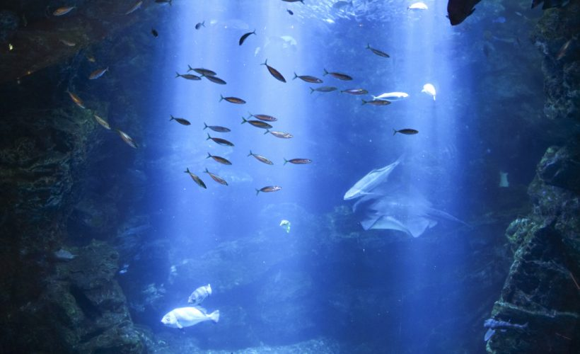
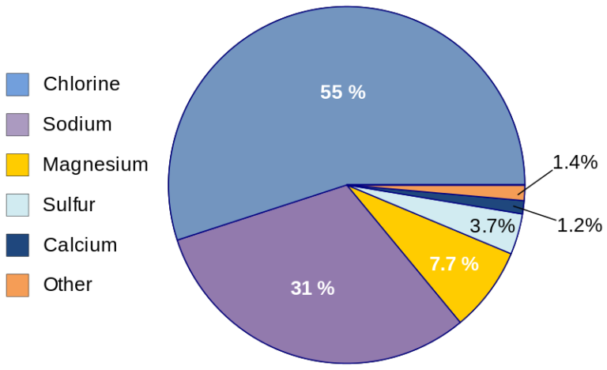
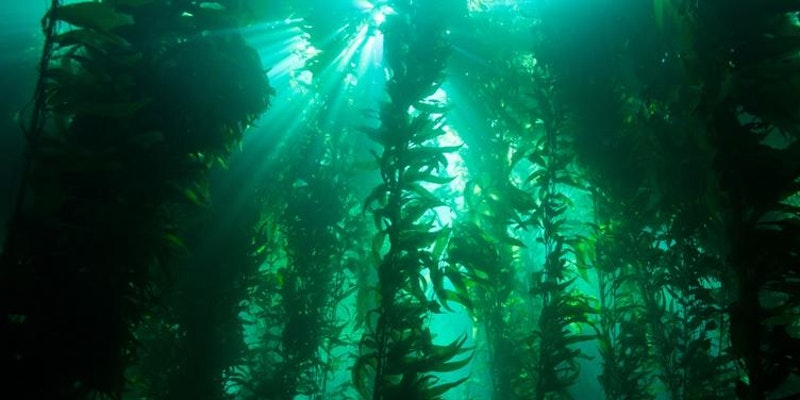
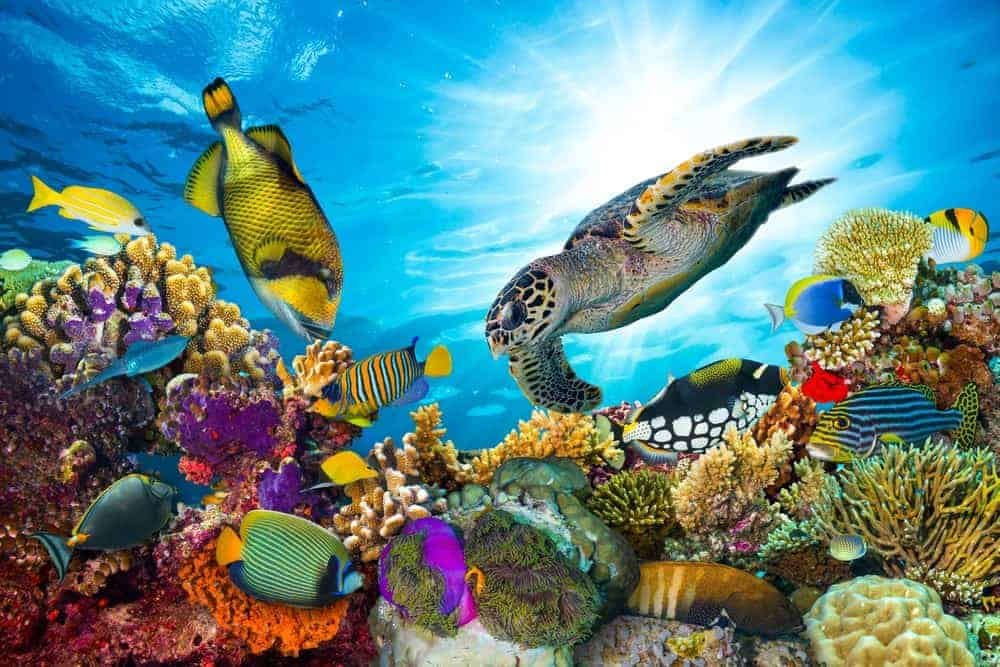
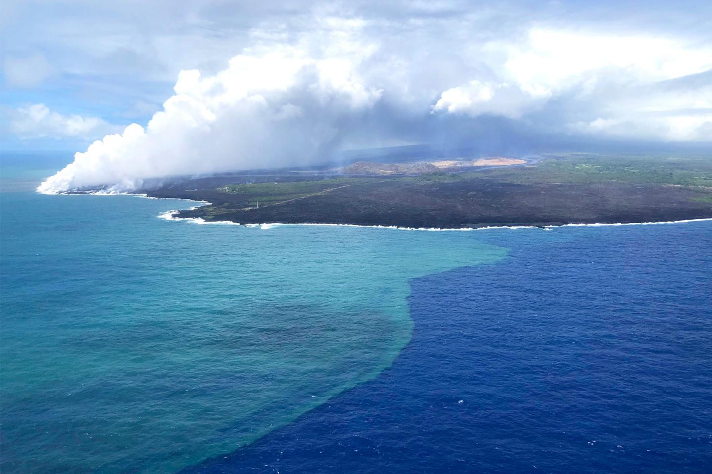
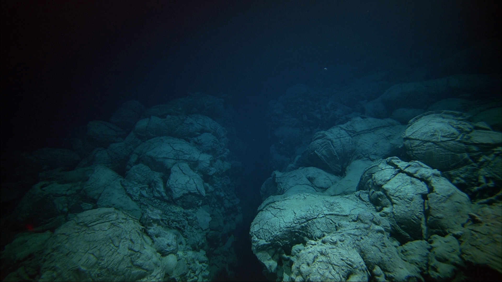

1. Most of the Earth’s oxygen is produced by the Ocean
Scientists agree that there’s oxygen from ocean plants in every breath we take. Most of this oxygen comes from tiny ocean plants called phytoplankton that live near the water’s surface and drift with the currents. Like all plants, they photosynthesize, that is, they use sunlight and carbon dioxide to make food. A byproduct of photosynthesis is oxygen. Phytoplankton are the foundation of the aquatic food web, the primary producers, feeding everything from microscopic, animal-like zooplankton to multi-ton whales. Small fish and invertebrates also graze on the plant-like organisms, and then those smaller animals are eaten by bigger ones.
2. The area of the oceans is about 70 percent of the Earth’s surface
The oceans make up 70 percent of 97 percent of the Earth's water can be found in our ocean. There are over 332,519,000 cubic miles of water on the planet, and just 5 percent of Earth’s oceans have been explored and charted . It also makes up the vast majority of water stores the majority of the planet’s moisture, terrestrial energy, and heat from the Sun. Did you know that all water in the ocean can fill 352,670,000,000,000,000,000 gallon-sized milk containers!

3. The composition of the Ocean Water
Water is a polar molecule so it can dissolve many substances such as salts, sugars, acids, bases, and organic molecules. The componets of the ocean water is the Chlorine, Sodium, Magnesium, Sulfur, Calcium, and so many other. Did you know the salt on oceans water comes from mineral deposits that find their way to the ocean through the water cycle. We can see the percentage of each on the graphic below.

4. The magnificent submarine forest
Macrocystis Pyrifera, the magnificent submarine forest, these stands of giant kelp are as important to the ocean as trees are to the land, it provides food and shelter for a giant community of animals. The gian kelp lives in waters, can grow 50 meters high, Is the largest seaweed and the largest of all marine algae. The giant kelp is part of the large kingdom of life known as the Protista. Most protists are single-celled organisms, but the giant kelp is the largest protist in the world.

5. The deepest place of the Ocean
The deepest area of the ocean is known as the 'The Challenger Deep' located at the Mariana Trench near Mariana Islands, and stays at the Pacific Ocean. The deepest point is 11 km deep (6.8 miles), and with one mile wide. On January 23, 1960, the Swiss navy ship, Trieste, from the United States Navy, descended to the bottom of the Challenger Deep, manned by Jacques Piccard, with his father, Auguste Piccard (the creator of the submarine) and Lieutenant Don Walsh.
6. How important is the coral reefs ?
Coral reefs support more species than any other marine environment, including about 4,000 species of fish, 800 species of hard corals and hundreds of other species! Did you know that many drugs are now being developed from coral reef animals and plants as possible cures for cancer, arthritis, human bacterial infections, viruses, and others. Coral reefs support the economic from jobs, like fishing, and a lot of turism from people all around the world. By one estimate, the total net benefit per year of the world's coral reefs is $29.8 billion.

7. World’s largest Ocean
The Pacific Ocean is the world’s largest ocean and contains around 25,000 islands. Covers about 46% of Earth's water surface and about 32% of Earth's surface area. The Ring of Fire is a roughly 25,000-mile chain of volcanoes and seismically active sites that outline the Pacific Ocean. Also known as the Circum-Pacific Belt, the Ring of Fire traces the meeting points of many tectonic plates, including the Eurasian, North American, Juan de Fuca, Cocos, Caribbean, Nazca, Antarctic, Indian, Australian, Philippine, and other smaller plates, which all encircle the large Pacific Plate. The Pacific Ocean it has some of the strongest hurricanes ever seen in the world! For example, the Super Typhoon Mangkhut, Philippines, In 2008, the biggest hurricane in the year. The name “Pacific Ocean” comes form the Latin name Tepre Pacificum, “peaceful sea”.

8. The 7 seas and 5 oceans
7 Seas
💧 Arctic is a polar region located at the northernmost part of Earth.
💧 North Atlantic is the portion of the Atlantic Ocean which lies north of the Equator.
💧 South Atlantic is the portion of the Atlantic Ocean which lies south of the Equator.
💧 North Pacific is in the North of the largest and deepest of Earth's oceanic divisions.
💧 South Pacific is in the South of the largest and deepest of Earth's oceanic divisions.
💧 Indian Arabian Sea, northwestern part of the Indian Ocean, covering a total area of about 1491000 square miles.
💧 Southern Oceans is regarded as the second-smallest of the five principal oceanic divisions.
5 Oceans
🌊 Pacific Ocean is the largest among all the five oceans of the world . Situated on Eastern side of America.
🌊 Atlantic Ocean is the second largest ocean of the world. Located on the western side of the Europe.
🌊 Indian Ocean is third largest ocean in the world is separated from Atlantic ocean by Southeast Asia and Australia.
🌊 Arctic Ocean which is surrounded by the North Eurasian and American continents is the smallest among 5 oceans.
🌊 Southern Ocean was earlier considered a part of the other ocean but now, it is classified as a separate ocean.
9. The largest mountain underwater
The longest mountain range in the world is found under water, with over 56,000km, it is a mountain chain that runs along the centre of the ocean basins, It has more than 90 percent of the mountain range lying in the deep ocean. The mid-ocean ridges occur along divergent plate boundaries, where new ocean floor is created as the Earth's tectonic plates spread apart.

10. The Tsunami speed
Tsunamis are triggered by seismic events and can, according to Pacific Tsunami Warning Center, move across the ocean at speeds of 500 miles km/h when the ocean depth is 3.7 miles. These waves are usually unnoticed, as they are only a few inches above the surface. And as the waves move towards land—and the depths shrink—they pick up water and increase in above-surface size. Megatsunamis have quite different features from other, more usual types of tsunamis. Most tsunamis are caused by underwater tectonic activity (movement of the earth's plates) and therefore occur along plate boundaries and as a result of earthquake and rise or fall in the sea floor, causing water to be displaced.